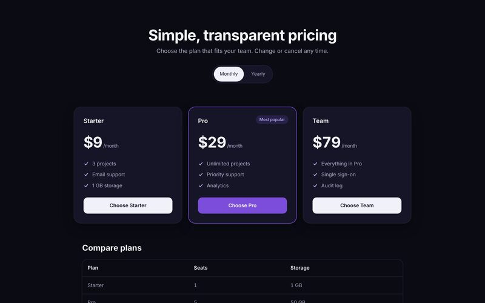
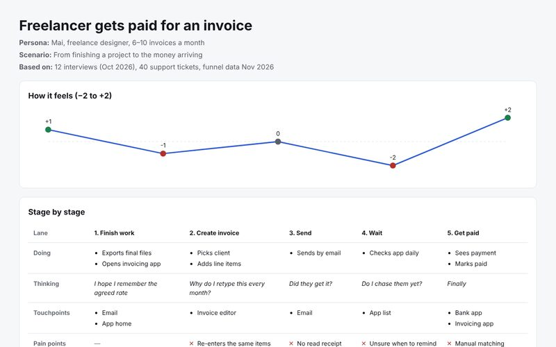
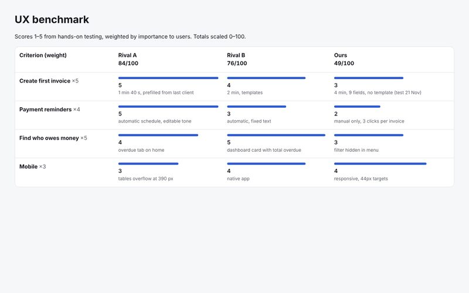
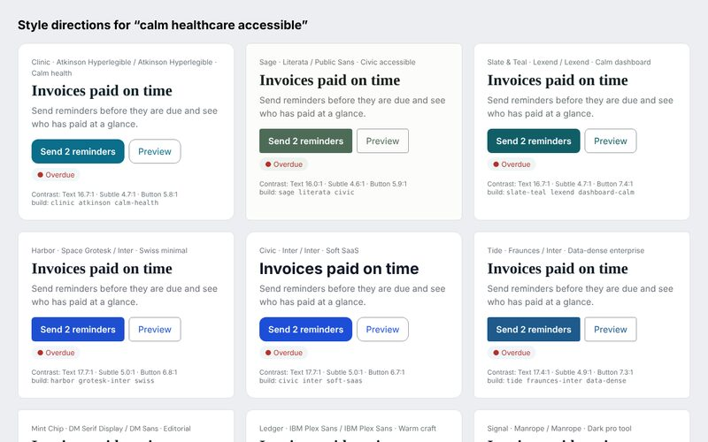
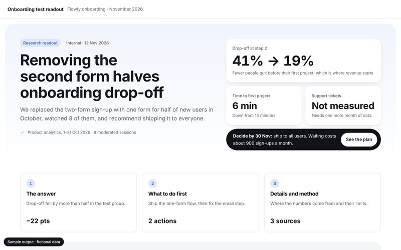
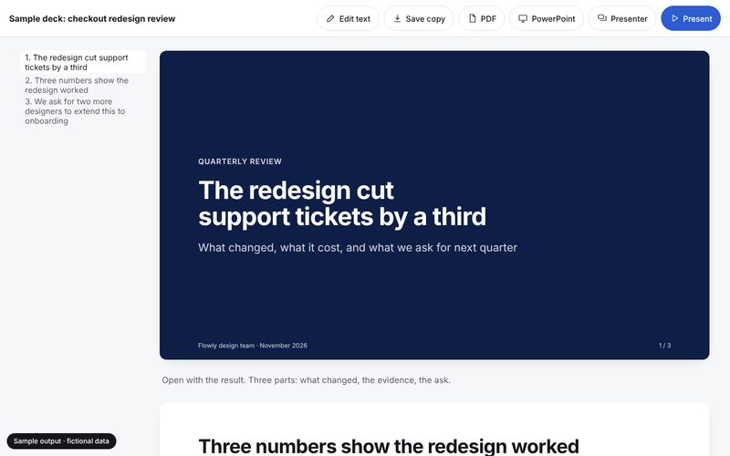
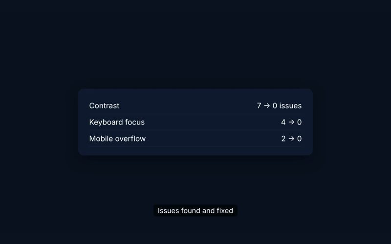

Examples
Real results, and the request that gets them
Every example was made by a UI/UX Pass skill, not drawn as a mock-up. Open one, use ← → to move between them, and copy the request to get the same result with your own page or data.


An AI-made pricing page, 38 → 66 of 66 checks
7 critical problems → 0: readable contrast, real buttons, no overflow on a phone, zoom allowed. Same content, same checker.
Compare before and after →
Design QA: the build vs the design
9.7% of pixels differ. Drag to compare, differences in red, the worst areas listed, fix tickets written.
Open →
Usability test results with honest ranges
Success per task with a 95% range, time, SEQ, SUS grade, and issues ranked by severity × share of users.
Open →
A journey map built from evidence
Stages, an emotion line from −2 to +2, pain points with evidence and the opportunity for each.
Open →
A UX benchmark against two competitors
The same tasks in every product, weighted 1–5 scores, and the gaps in the order worth fixing.
Open →
A user flow with every state
Flow diagram, a check for dead ends and missing empty, loading and error states, and a grey-box wireframe per screen.
Open →
A design system in light and dark
Every component in every state from semantic tokens; every colour pair passes WCAG AA. Toggle dark theme inside.
Open →
Three style directions, contrast-checked
Palette, font pairing and style recipe side by side, every one passing AA.
Open →
A research readout people actually read
Conclusion first, three key points, sourced numbers and a method note, as one web page.
Open →
A deck you can present
One HTML file: scroll or present, presenter view, edit in place, PDF and PowerPoint export.
Open →
A 12-second launch video
Written in HTML, rendered to MP4, checked for readable text, safe area and captions.
Play →The requests are plain wording that switches each skill on; they are not the exact words used to make these files. Sample data is invented, and the numbers are what the checkers really measured.
Get all 45 skills, and every one we add later.
One payment, lifetime updates. Team licences from $149. Or check a page free first.